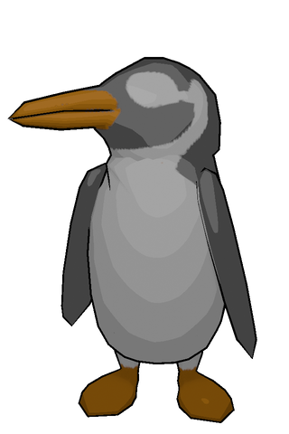
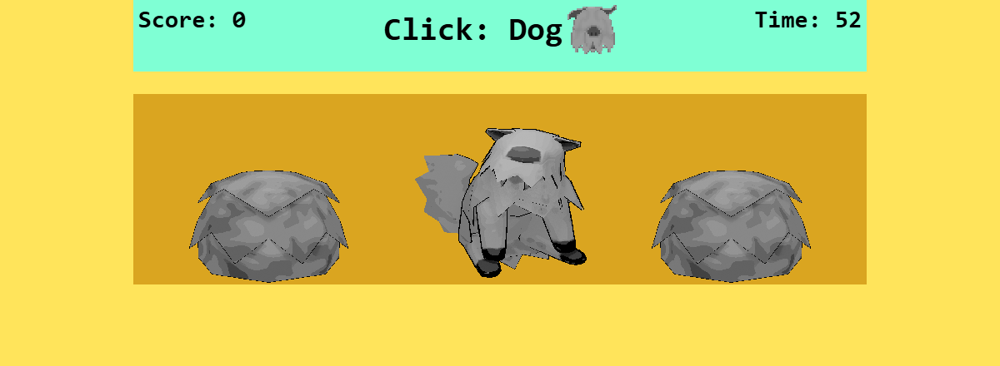
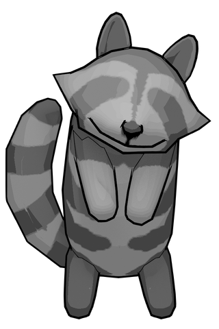
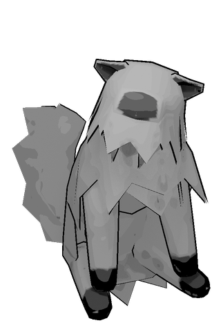
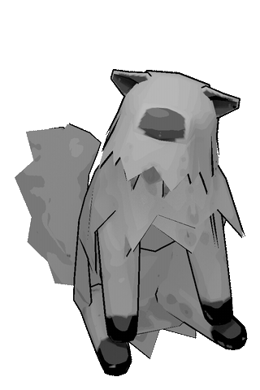
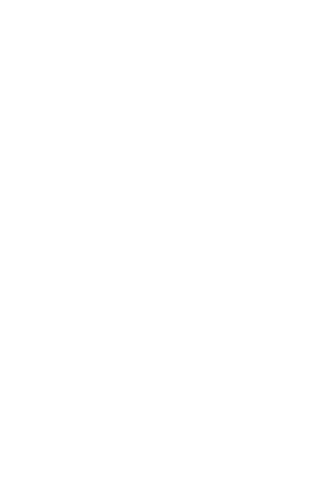
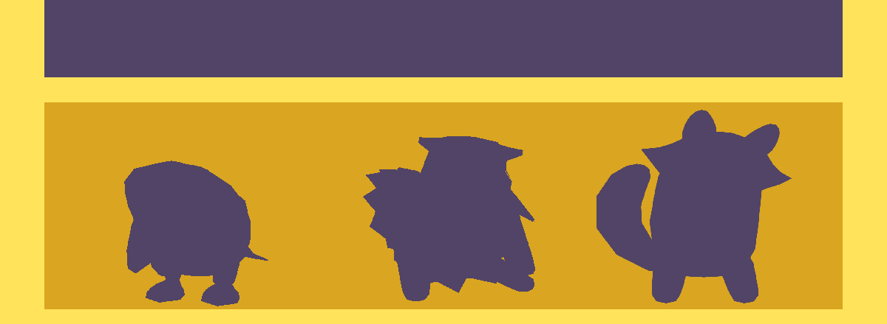

Penguin Elijah
Falls asleep if you leave him alone, and the whole board goes dark until you wake him.
Group Project 1 · Sep 21–28, 2026 · team of 3
A reflex game with exactly one button per teammate. Each button is an animal that acts like one of us, and each one gets in your way.

Make a game where each team member is represented by exactly one button. We chose animals that match our personalities and gave each one a behaviour that messes with the player.

Falls asleep if you leave him alone, and the whole board goes dark until you wake him.

When it's his turn to be clicked, he flashes a warning and swaps places with another animal.

Friendly, gets along with everyone, and sneezes fur all over them, so you have to dig the other animals out.
Our first idea needed several copies of each animal, which broke the "exactly one button per member" rule (Dr. Frisson confirmed it). The animals' behaviours didn't depend on the grid, so we kept them and swapped the board. Instead of drawing new sketches we talked each change through in Discord, which left more time for building.
?nodog and ?nosleep URL flags, so we could record each mechanic on its own.
Leo modelled and rendered the animals. I wired each animation to the game: when it plays, how long it lasts, and what it covers up.



// show the fur pile and hide the animal; // the animal keeps doing its thing underneath. // clicking it just uncovers the animal // (no penalty, only wastes a click) applyFur(hole) { if (hole.mole == null || hole.isFurred) return; var fur = hole.slotElement.querySelector(".fur-pile"); hole.isFurred = true; fur.src = "Sprites/Dog/dog_fur_pile.gif"; fur.hidden = false; hole.visualElement.style.visibility = "hidden"; // ...a click on the slot removes the fur }
The one-button rule killed our first idea. The animals survived the pivot because we had designed behaviours, not a board.
Fur costs you a click, never points. A lot of my last-day commits were tuning that line between a fun obstacle and an unfair penalty: sneeze timing, free uncovering, fur that stays put.
One consistent colour palette (our bright yellow fought the grey animals) and a visual timer bar instead of a number you have to read mid-panic.
Team credit: Leo Nguyen made the 3D animal models, sprites, and responsive layout. Elijah Mickelson built the hole and animal class structure and movement. Sounds from Pixabay.